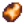

This page or section contains unmarked spoilers from update 1.6 of Stardew Valley. Players may want to avoid or be cautious toward reading this article/section.
The Desert Festival is a festival that happens every year in the Desert on Spring 15th, 16th, and 17th. Unlike non-festival days, players may enter the desert prior to when Pam typically arrives at the Bus Stop, even though the event officially starts at 10am each day. However, on the final day of the festival, the player must wait until Pam arrives to drive the bus at approximately 9am (earlier than her normal 10am arrival). This event requires the Bus to be repaired in order to visit the festival.
Sandy's shop will not be open during the festival, however the player may still enter the Oasis. The Desert Trader is still present and her shop is accessible.
Several challenges and attractions offer the ability to earn this festival's currency,  Calico Eggs. Calico Eggs are physical items within the game that can be used to purchase items from the various shops during the Desert Festival. Eggs carry over from day to day. However, they will disappear from chests or inventory at the end of the festival and are not saved for the following year.
The eggs can be sold in the Shipping Bin, but they sell for data-sort-value="0">0g.
Throughout the day, players may bet on races that take place on the hour. If a player's chosen contestant wins, they will receive data-sort-value="20"> 20 per win. Players may place bets until 9:50pm.[1]
The player can also cheat the race by giving the Suspicious Man next to the Oasis data-sort-value="1"> 1 in exchange for one of the race contestants of the player's choosing possibly losing the race.
The 5 possible contestants are Speed Rooster, King Sting, Shoebiscuit, Escar-go, and Cactus Crawler. Only 3 contestants will race each day.
Speed Rooster
King Sting
Shoebiscuit
Escar-go
Cactus Crawler
Tips
Picking Escar-go is a bad choice, since it has a lower minimum speed, maximum speed, and shorter dash time.
Calico Egg Merchant
The Calico Egg Merchant sells several accessories and furniture items, as well as various usable items. Some items are sold every day, while others are only available on certain days.[2] Items with limited stock are replenished each day.
Every day, two villagers are randomly chosen to host their own shops at the festival.[3] These shops are available from 12 pm to 12 am, and their stocks are listed below.[2] Items with limited stock are replenished each day that a villager hosts their shop. Players are able to walk into the Villager Shops through the back, meaning these villagers are still available for gifting, talking, or quest completion while at their posts.
Every day, Emily and Sandy offer the player a random new outfit with a short cutscene, in which Emily will pick the clothing that "embodies the player". The player's original outfit is placed in their inventory. If the player tries to re-enter the hut in which the clothing service happens, the player will be blocked from entering, with Emily saying that the player looks great in their new outfit. On days where Emily runs a Villager Shop, Sandy will take over after a bit of hesitation.
There are 61 total makeover outfits: 34 gender-neutral, 13 male-only, and 14 female-only.[4] Each outfit consists of a shirt, a pant, and possibly a hat. Of note, the Dark Ballcap, Joja Cap, and Laurel Wreath Crown can be obtained with three of the gender-neutral outfits. In addition, the Tight Pants can be obtained from a few outfits.
Chef
The Chef gives the player a choice of ingredients to make them a meal with varying effects depending on the ingredients chosen. The player may do so repeatedly and choose different ingredients each time. The meal will be eaten; any effects will be applied immediately and last for 7 minutes.[5] The buffs from dishes are a combination of buffs from both ingredient choices, e.g; Crystal Cake grants both Mining (+3) and Luck (+1) buffs.
Any dish will restore the player to maximum health and energy.[5] In addition, these dishes will stack with any food or drink buffs from the player.
Once per festival, the player may obtain a cactus decor item from the Cactus Salesman at the bottom of the map. This decor is one out of several, and its face, colors, and design vary. The player must have an empty inventory slot to receive the cactus.[5]
Sly Cactus and Free Cactus Salesman
Random Cactus Combinations
Skull Cavern
During the Desert Festival, Marlon offers one-day Skull Cavern-related quests that will award the player Calico Eggs if completed. There are 3 types of quests offered; 2 will randomly be shown each day.[6] The player does not need to have obtained the Skull Key to enter the Skull Cavern during the festival, and the Skull Cavern functions as it normally does (including Treasure Rooms and hard-mode ("Dangerous", "Skull Cavern Invasion"); as such, if hard-mode is toggled on, one may want to toggle it off before the festival!).
Skull Cavern Quests
Quest Name
Quest Text
Requirements
Reward
Monster Hunt
Descend into the Skull Cavern and slay 10 [Monster].
The Skull Cavern has a few additions that are unique to the Desert Festival. There are Calico Egg Nodes which, when mined, yield data-sort-value="1-3"> 1-3.[7] Players can also obtain data-sort-value="1-3"> 1-3 from slaying monsters and breaking crates and barrels. The chance of finding Calico Egg Nodes steadily increases as players go deeper into the Cavern.[8] This is also true for drop chances from monsters and containers. The monster drop chance ranges from 2%-50%[9], while the container drop chance has a maximum of 33%[10].
Players also gain 1 "Egg Rating" for every 5 floors reached and every Calico Statue activated. Calico Statues may randomly appear once per floor (even Treasure Rooms). Activating the statue grants a random effect that lasts throughout the player's current descent into the Cavern.
Talking to Gil presents the option to submit the day's highest Egg Rating for prizes. These prizes, based on the player's Egg Rating, include Calico Eggs, food, drinks, and other items.[5]
Gil's Egg Rating Prizes
Egg Rating
Gil's Response
Rewards
1-4
"...[Egg Rating #]? Hahahaha.... okay, kiddo. Here's a little prizey for you... now, go along and play with the other kids."
You hear a voice in your head: ‘It would be dishonorable to submit an egg rating acquired through the use of cheat code software!’
None
Harvey's Medical Station
If the player loses all Health in the Skull Cavern and is knocked out, they will awaken at Harvey's "shop" located in the festival next to the Cavern entrance. The player will awaken with 10 Health, and they will not lose any additional Energy or Gold. The player will keep their items, but they will lose 20% of the Calico Eggs in their inventory.[17] Talking to Harvey will result in the same dialogue as before the player died.
Willy's Fishing Quests
Willy offers one-day fishing-related quests that will award the player Calico Eggs upon completion. There is a different quest for each day of the festival.[5] On Spring 17, the Golden Bobber will appear in the first Treasure Chest fished up.[20]
Willy: A fish swallowed me rare golden bobber! There's 30 eggs for whoever returns it.
data-sort-value="30"> 30
Scholar
The Scholar asks the player a series of four questions. If all four answers are correct, then the reward is data-sort-value="50"> 50. The player has one chance per day to achieve this. After a successful round of questions, the player must wait until next year to receive another reward. Questions are randomized every time they are asked.
One of the questions asks the player to recall their total number of steps taken. Three options are given. The order of the options is randomized, but the middle value will always be correct.[21]
The Shrouded Figure offers to teleport the player back to their farm for data-sort-value="250">250g, like in the Night Market during Winter. It functions the same as the Warp Totem: Farm.
Traveling Cart
The Traveling Cart makes an appearance with her standard cart, sporting an umbrella over the pig's head. A selection of the usual items is sold (with a new re-randomized stock for each of the 3 days), including the Wedding Ring recipe in a Multiplayer game. The shop opens at 12 pm.
Villager Attendees
Like the Night Market, villagers will deviate from their regular schedules to attend the Desert Festival. The lists below show which villagers attend on which days each year.
If a villager hosts a Villager Shop, then this will override their regular schedules (e.g., they may appear at the Desert Festival on days they normally would not).[3]
The trash bin next to the Calico Egg Merchant's shop can be checked and contains data-sort-value="5-8"> 5-8 once per day.[22]
Since the game uses a unique desert map during festival days, items a player has placed in the Desert (like Chests) may disappear during the Desert Festival. These items should return on Spring 18.
Trivia
The racer Shoebiscuit's name is likely a reference to the famous race horse Seabiscuit.
References
↑See DesertFestival::CanMakeAnotherRaceGuess in the game code.
↑ 2.02.1See Content\Data\Shops.xnb, cases "DesertFestival_EggShop" and "DesertFestival_VillagerName" in the game code.
↑ 3.03.1See DesertFestival::CreateDaySaveRandom and DesertFestival::SetupMerchantSchedule in the game code.
↑See Content\Data\MakeoverOutfits.xnb in the game code.
↑ 5.05.15.25.35.4See DesertFestival::answerDialogueAction, cases "Cook", "CactusMan_Yes", "Gil_EggRating_Yes", and "Fishing_Quest_Yes" in the game code.
↑See Content\Data\SpecialOrders.xnb, ID "DesertFestivalMarlon" in the game code.